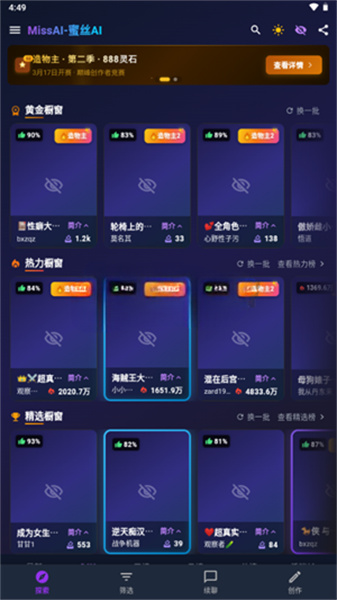

AI 角色对话横评：MissAI 凭什么在同类里站稳
市面上 AI 角色对话工具不少，但真正把「角色扮演」这件事做透的并不多。这篇从老用户视角聊聊 MissAI 的独到之处，以及它适合谁。
AI 角色对话这个赛道，最近两年挤进来的玩家越来越多。大厂做、小团队做、甚至个人开发者也能搭一个套壳蹭流量。用过一圈下来，我发现大多数产品都卡在同一个地方：AI 会聊天，但不会演角色。对话三两句就出戏，人设一致性撑不过十轮，更别说让你自己动手创造角色了。
MissAI 算是这个品类里少数几个认真把「角色扮演」当核心做的产品。如果你关心的不只是"跟 AI 说说话"，而是真的想让一个虚拟角色陪你对话、陪你玩、甚至由你亲手塑造——那它值得单独拿出来说。它的官网上角色库规模和社区活跃度也能侧面印证它在这个赛道上的投入。
同类里它排在哪
先给个大图景。AI 角色对话目前大致分三档：第一档是大厂通用助手的角色扮演功能，本质是给通用大模型套个 prompt 壳，人设深度浅、自由度低；第二档是专门的角色对话 App，内置预设角色库，用户能挑现成的聊，但创作权限有限；第三档是角色 + 创作工具双轮驱动的平台，MissAI 就属于这一档。

这一档的核心区别在于：你不只是消费者，还是创作者。平台给的不只是角色库，还有一套完整的角色编辑和发布体系。这个定位决定了它和市面上绝大多数"AI 聊天机器人"不是一个东西——后者卖的是陪伴感，MissAI 卖的是一套角色扮演的生态。
差异化一：Profile 体系把"人设"做实了
用过同类工具的人都懂那种尴尬：AI 嘴上说自己是"傲娇学妹"，聊两句就变成了一个礼貌的客服。人设漂移是这个品类最普遍的痛点。
MissAI 解决这个问题的核心手段是 Profile 体系。每个角色都有一套结构化的人设档案，不是几句 prompt 堆出来的，而是明确拆成四个维度：Persona（性格和说话方式）、Background（来历和故事）、Relationships（与其他角色的关系）、Taboos（禁忌话题）。尤其 Taboos 这一条，我在其他同类产品里很少看到做得这么明确的——直接告诉 AI 哪些话绝对不能接，反而让对话边界清晰了很多。
举个例子，我试过一个设定为"冷战时期苏联军官"的角色。Profile 里明写了 Taboos：拒绝讨论苏联解体后的任何政治话题、对西方人保持警惕但不会拒绝军事合作。对话里我故意绕了个弯子提到 1991 年的事，AI 直接"话题转换"而不是硬接——这种边界感在其他平台上很少见，大多数 AI 要么顺着聊下去人设崩了，要么干脆假装没看到我的问题。Profile 各个字段的写法和 Taboos 的配置思路，在MissAI文档里有完整说明。
差异化二：Studio 创作工坊给了真自由度
很多产品号称"允许用户创建角色"，点进去才发现就是填个名字、选个头像模板、写三句话简介。这种"创建"本质上还是在玩平台给的有限选项，谈不上创造。
MissAI 的 Studio 创作工坊是我见过同类里最完整的。角色编辑器里有几个设计我觉得特别值得提：
Persona 文案不鼓励抽象标签。它引导你写"紧张时会咬嘴唇"而不是"性格内向"，还支持直接给 AI 喂几个说话风格的例句——这相当于给模型做了一次 few-shot 微调，角色的语言质感一下就出来了。
关系图和记忆钩子是真正的黑科技。你可以给角色设置与其他角色的关系（家人、恋人、敌人……）和情绪基调，还能配置记忆触发点——"提到名字叫小林的人时会紧张"。这些设置在其他同类工具里我基本没见过，它们让角色不再是孤立的存在，而是活在一个有网有关系的小世界里。

头像三种来源都打通了。预设图库、自己上传、Premium 用户还能用 AI 生成——这条看似简单，但很多产品只做了其中一两种就停了，MissAI 全部打通说明它真的在降低创作门槛。
差异化三：灵石和评价机制让生态跑起来了
角色库不是 MissAI 最宝贵的资产，活跃的创作者社区才是。它的做法是用灵石和评价体系来激励创作：用户体验你的作品会消耗灵石，灵石消耗量大就等于作品受欢迎；还有点赞、踩和文字评论，正面评价能提升排名。
这个设计的妙处在于，它不像有些平台那样给头部创作者巨额流量分成——那会导致马太效应。MissAI 的机制更像是一种社区自治：只要你的角色有人玩、有人评，就能获得对应的曝光，而不是被算法锁死在头部。我自己创建过一个小众推理跑团 NPC 的角色，一周内积累了两百多次灵石消耗，在同类产品上你一个新角色能拿到二十次对话就不错了。
它的取舍
说点不好听的。MissAI 不是没有代价，它为这些优势牺牲了一些东西。
上手门槛确实高。第一次进来就面对几千个角色加上一个功能齐全但不算友好的创作工坊，新用户很容易懵。同类里很多产品走的是"极简路线"——打开就一个对话框，聊就行——MissAI 明显更重。好消息是角色库本身质量够高，不想创作的话挑现成的也能直接用，Studio 可以以后再碰。想试试的话，MissAI下载就能拿到安装包。
Premium 订阅制挡住了一部分人。AI 生成头像、更多的模型选择、更长的上下文窗口，这些都在付费墙后面。不过坦白说它的免费版已经覆盖了绝大多数核心功能——挑角色、对话、基础创作——如果你真的想深度用，订阅价格也还算合理。
角色质量两极分化。社区开放创作的代价就是水平参差不齐。好在分类标签和热度榜单能帮你过滤掉大量粗制滥造的角色，首页推荐也有一定的匹配度，不算难用。
选购结论
什么样的人选 MissAI？如果你满足以下任意一条，就可以试试：
- 想让 AI 陪你"演"而不是陪你"聊"——对人设一致性有要求的人
- 想自己动手打造角色——从一个想法到一个完整角色的全过程不想被简化
- 想体验一个有人在持续创作新内容的角色库，而不是几年不更新的预设列表
什么样的人可以看看别的？如果你只是想找个 AI 聊聊天、问问题、帮你写东西——市面上几十块通用工具就能搞定，没必要花时间在角色 Profile 和关系图上。极简路线的产品反而是更好的选择。
我自己的建议是：如果你的需求真的是"虚拟角色"这个品类里的东西，MissAI 是目前最值得投入时间的一款。它没有把 AI 角色对话做成一次性的玩具，而是真的在做一套生态——这在当前的同质化洪流里，已经是足够站得住的理由了。